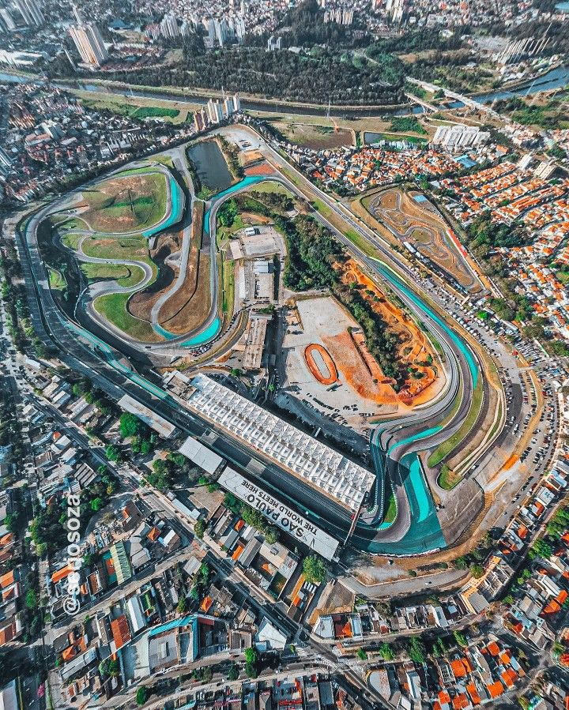

Autódromo José Carlos Pace

>Technical Details
Location: São Paulo, Brazil
Length: 4.309 km
Laps: 71
First GP: 1973
Curiosities
The Autódromo José Carlos Pace, commonly known as Interlagos, is located in São Paulo and hosts the Brazilian Grand Prix. It is one of the most iconic circuits in Formula 1, known for its anti-clockwise layout, elevation changes, and unpredictable weather conditions. The track has produced many dramatic and historic championship battles, often influencing title outcomes in the final stages of the season. Over time, the circuit has been updated to improve safety and racing quality while preserving its classic and highly technical character.